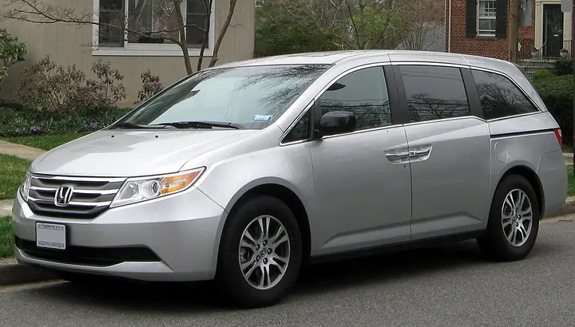
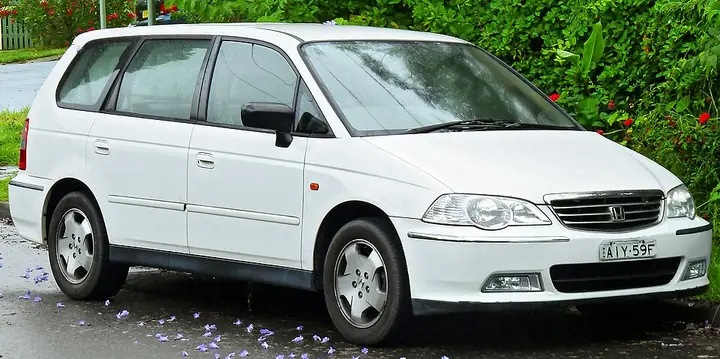
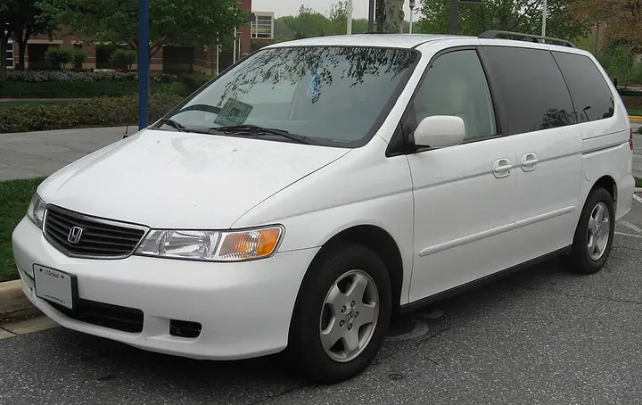
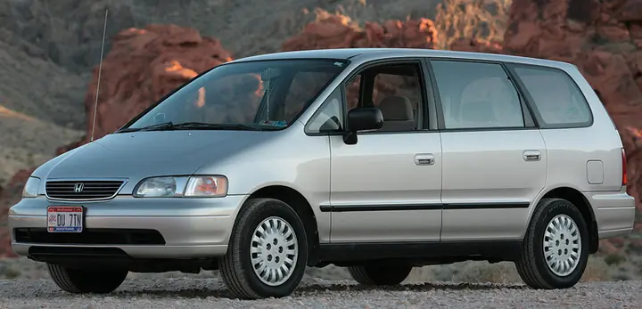
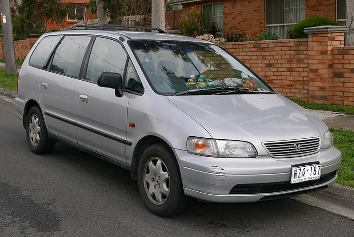

Honda Odyssey
Fifth generation (RL6; 2018) · 2017–present
Abstract
This generation of the Honda Odyssey was built April 2017–present in United States: Lincoln, Alabama (HMA). Designed by Randall Smock (2015).

1Specifications
| Production | April 2017–present |
|---|---|
| Model years | 2018–present |
| Assembly | United States: Lincoln, Alabama (HMA) |
| Designer | Randall Smock (2015) |
| Engine | 3.5 L J35Y6 V6 |
| Transmission | 9-speed ZF 9HP automatic (2018–19 non-Touring and Elite models)10-speed automatic (Touring and Elite models: 2018–19, standard: 2020–) |
| Wheelbase | 118.1 in |
| Length | 203.2 in |
| Width | 78.5 in |
| Height | 69.5 in |
| Weight | 4354-4593 lb |
2Versions
- 2021 facelift
- 2025 facelift
3Previous generations
_(cropped).jpg){kind=link}



_China_(15)_(cropped).jpg){kind=link}

_01.jpg){kind=link}





_01.jpg){kind=link}
4Generation by generation
Length +9% from the first to the last
RA1–RA5 19944,750 mm
RA 19944,755 mm
RL1 19985,110 mm
RA6–RA9 19994,770 mm
RB1 20034,765 mm
RL3 20045,105 mm
RB3 20084,780 mm
RL5 20105,154 mm
RC 20134,830 mm
RL6 20175,161 mm
Weight +34% from the first to the last
RA1–RA5 19941,470 kg
RA6–RA9 19991,570 kg
RB1 20031,610 kg
RB3 20081,600 kg
RC 20131,700 kg
RL6 20171,975 kg